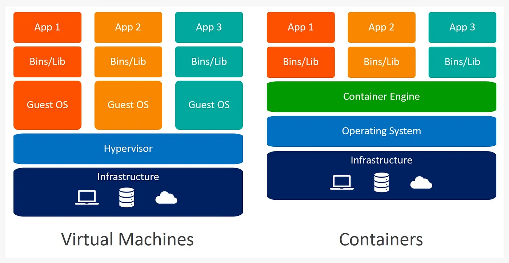

2. Los Contenedores 📦
Probablemente hayas oído en algún momento hablar de Docker (no nos referimos a la marca de ropa), lanzado en 2013 por la empresa del mismo nombre, rápidamente se ha convertido en una de las tecnologías más populares en la informática. Los contenedores no surgen con Docker, sino que mucho antes con tecnologías que permiten la virtualización a nivel de sistema operativo como Linux Containers, LXC.
¿Qué son los contenedores?
Los contenedores son como pequeñas cápsulas diseñadas para que las aplicaciones puedan ejecutarse de manera predecible y repetible, sin importar el entorno en el que se encuentren. Tal como un traje espacial protege a un astronauta 👩🚀 para que pueda sobrevivir en cualquier planeta sin necesidad de recrear toda la atmósfera de la Tierra 🌎, un contenedor encapsula una aplicación junto con todas sus dependencias (bibliotecas, configuraciones y archivos necesarios) en un entorno aislado.
Esto garantiza que la aplicación funcione de la misma forma en el entorno de desarrollo, pruebas o producción.
A diferencia de las máquinas virtuales, que requieren un sistema operativo completo para cada instancia, los contenedores utilizan tecnologías de virtualización más ligeras que funcionan a nivel del sistema operativo. Esto significa que todos los contenedores comparten el mismo núcleo del sistema operativo subyacente, el mismo kernel, pero cada uno tiene su propio sistema de archivos, librerías y configuraciones, lo que los hace independientes entre sí.
¿Por qué esto es importante?
Porque los contenedores no solo hacen que las aplicaciones sean fáciles de mover entre diferentes entornos, sino que también optimizan el uso de recursos del sistema, permitiendo que múltiples contenedores se ejecuten en el mismo servidor de manera eficiente. Además, su portabilidad y escalabilidad hacen que sean ideales para manejar cargas de trabajo variables, garantizando que tus aplicaciones estén listas para enfrentar cualquier desafío.
Diferencias clave: contenedores vs máquinas virtuales

Cuando hablamos de contenedores y máquinas virtuales, nos referimos a dos tecnologías de virtualización que permiten ejecutar múltiples aplicaciones en un mismo servidor físico. Sin embargo, sus diferencias son fundamentales y radican en cómo manejan la virtualización, el uso de recursos y su arquitectura.
Entonces veamos ahora algunas diferencias entre estas tecnologías
Virtualización y Arquitectura
- Como ya vimos, las máquinas virtuales (VMs) emulan un hardware completo, incluido un sistema operativo (guest). Esto significa que cada VM actúa como si fuera un computador completo y separado, gestionado por el hipervisor, que coordina los recursos del servidor físico (host).
- Por otro lado, los contenedores virtualizan el sistema operativo en lugar del hardware. En lugar de duplicar sistemas operativos completos, comparten el núcleo del sistema operativo subyacente y aíslan cada aplicación en su propio entorno. Esto los hace más ligeros y rápidos que las máquinas virtuales.
Tecnología principal
- Las VMs dependen de hipervisores, que gestionan el acceso entre el sistema operativo invitado y el sistema operativo host. Este enfoque es robusto, pero introduce una mayor sobrecarga en términos de rendimiento y uso de recursos.
- Los contenedores, en cambio, utilizan un motor de contenedores o un run-time (como Docker). Este software actúa como intermediario, proporcionando y gestionando los recursos necesarios para que las aplicaciones funcionen de manera eficiente.
Tamaño y uso de recursos
- Las máquinas virtuales suelen ser pesadas: sus archivos de imagen ocupan varios gigabytes, ya que incluyen un sistema operativo completo. Esto las hace ideales para escenarios donde se requiere emular hardware completo o ejecutar sistemas heterogéneos.
- Los contenedores, por su parte, son mucho más ligeros, con tamaños en el rango de megabytes, ya que solo contienen los archivos y configuraciones necesarios para ejecutar una aplicación específica. Esto permite ejecutar muchos más contenedores en el mismo hardware en comparación con VMs.
Ventajas en el mundo real
- Las máquinas virtuales ofrecen un aislamiento total, siendo ideales para ejecutar aplicaciones que requieren un entorno completamente independiente o para replicar infraestructuras complejas (servidores, redes, bases de datos).
- Los contenedores son perfectos para aplicaciones modernas que necesitan rapidez, escalabilidad y eficiencia, ya que inician en segundos y aprovechan mejor los recursos del hardware.
Casos en los que los contenedores son útiles
Los contenedores tienen una amplia gama de aplicaciones. Entre los usos más frecuentes se encuentran:
- Creación y pruebas de software
- Despliegue de arquitecturas basadas en microservicios
- Implementación de soluciones en entornos de nube
- Procesos de Integración y Despliegue Continuo (CI/CD)
- Separación de entornos para aplicaciones
- Mejora en la escalabilidad y disponibilidad del sistema
- Desarrollo compatible con múltiples plataformas
En resumen, las VMs son como construir casas completas en un terreno, con sus propias bases, paredes y techos (sistemas operativos completos), mientras que los contenedores son como departamentos en un edificio que comparten la misma estructura (el núcleo del sistema operativo) pero con espacios completamente independientes. La elección entre ambas tecnologías dependerá de las necesidades de tu proyecto.